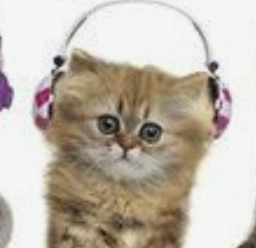

Image |
Breed |
Description |
|  |
Ragamuffin |
Despite being a calm cat, the Ragamuffin does not actually fall limp when held. She has a level temperament and gets along with every member of the household. She normally does not become bothered by routine changes. She is the perfect friend for individuals who live in apartments. The Ragamuffin is a big cat with a lengthy body. She has a lengthy tail, a thick coat, and heavy bones. Ragamuffin Cat Breed - facts and personality traits: Hill's pet. Hill's Pet Nutrition. (n.d.). Retrieved December 14, 2022, from https://www.hillspet.com/cat-care/cat-breeds/ragamuffin |
|
Norweigian Forest Cat |
A lovely and affectionate cat, the Norwegian Forest Cat. She enjoys receiving compliments and interacting with her parents. Once she accepts her parents as her own, she unites with them and makes a devoted companion. She is a huge, powerfully boned, thickly coated cat as well. Norwegian Forest Cat Breed - facts and personality traits: Hill's pet. Hill's Pet Nutrition. (n.d.). Retrieved December 14, 2022, from https://www.hillspet.com/cat-care/cat-breeds/norwegian-forest-cat |
|
American Curl cat |
The American Curl cat has a lot of energy. She gets along well with her parents and has a strong interest in people. Despite not being particularly enormous, this well-muscled cat has a lengthy body in relation to its size. Despite having a long body, the American Curl is not a fragile cat because of her medium-sized bones.
American Curl Cat Breed - facts and personality traits: Hill's pet. Hill's Pet Nutrition. (n.d.). Retrieved December 14, 2022, from https://www.hillspet.com/cat-care/cat-breeds/american-curl |